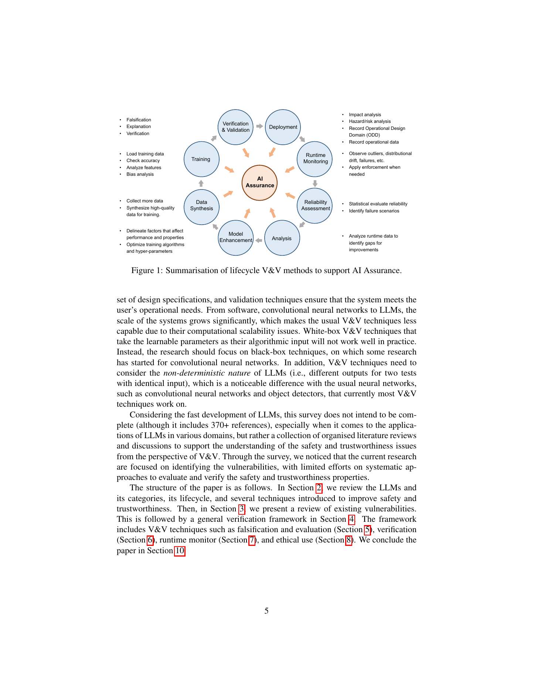

Problem
解决的问题
LLM 被快速集成进工业和社会应用，但安全漏洞、幻觉、偏见、攻击、非预期行为和监管约束贯穿整个生命周期。现有研究大量发现问题，却缺少从工程生命周期出发的系统性保障框架。
Research on LLMs and VLMs · 2024 · Artificial Intelligence Review
A Survey of Safety and Trustworthiness of Large Language Models Through the Lens of Verification and Validation
Problem
LLM 被快速集成进工业和社会应用，但安全漏洞、幻觉、偏见、攻击、非预期行为和监管约束贯穿整个生命周期。现有研究大量发现问题，却缺少从工程生命周期出发的系统性保障框架。
Value
适合作为 LLM 安全可信研究的总览页面：读者可以从中理解为什么单次 benchmark 不能替代完整的工程保证。
Extracted Figure Page
图中把数据、训练、部署、运行等生命周期阶段与验证、测试、监控、治理手段连接起来，体现本文的主线。
打开原文第 5 页
Technical Route
Innovation